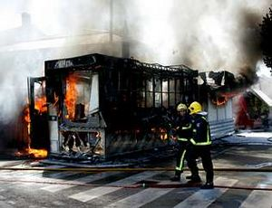
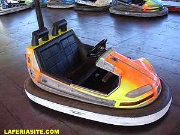
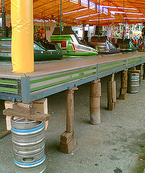
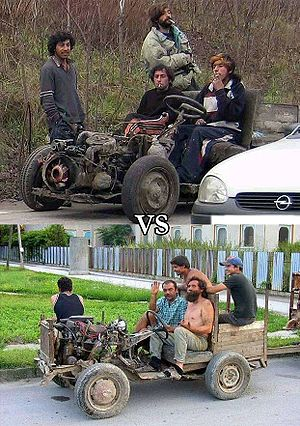

Feria
 De: La Frikipedia, la enciclopedia extremadamente seria.
De: La Frikipedia, la enciclopedia extremadamente seria.
| De la serie empresas malignas:
|
| Feria
|
|
|
| Perteneciente al grupo:
|
Atracciones Mortales S.A
|
| Se dedica a:
|
estafar a los pobres usuarios.
|
| País de origen:
|
Espiña o cualquier otro.
|
| Año de fundación:
|
1X33
|
| Super Presidente:
|
Richal Calo IV
|
| Nivel de maldad:
|
mucha.
|
| Empresas absorbidas:
|
la " V " y el "Dragon Khan".
|
| Número de empleados:
|
muchos pero ninguno con contrato.
|
| Atentados contra la humanidad
|
formando niñatos locos desde 1X33.
|
| ¿Se aconseja trabajar aquí?
|
si, si te gusta las emociones fuertes.
|
| ¿Se recomienda el boicot?
|
no se aconseja por el alto contenido de canis trabajadores.
|
| Cantidad de denuncias:
|
por brazos amputados e intoxicaciones muchas.
|
| Sitio web:
|
[ké ez erzó mi jarma Página oficial de Feria]
|
 Puesto "neutralizado" tras una amable discusion por una diferencia de pareceres en los precios de los productos comunes.
 Por esto un cani puede llegar a maltratar.
 La seguridad es lo principal en las atracciones.
 Coches de choque para gitanos, la feria se adapta para todas las razas.

Casetas en la feria. !!Cuidado con los palos¡¡.
La definicion de feria varía según la edad del ser humano:
- Niño: es un sitio mágico, lleno de colorines, de emplazamiento desconocido (como el crio no lleva el coche), donde papa y mama me compran chucherías, churros, globos, juguetes y puedo montar en los coches y los caballitos. Todo es felicidad gratuita.
- Adolescente: es un sitio para pasar el rato, empezar a fumar, estrenar la ropa nueva, beber los primeros botellines, lucirse y meter mano al sexo contrario, ademas de hacerse el machote o la mayor.
- Papa y Mama: sacadineros horrible, "atomarporculo" de casa, sin sitio para aparcar, donde probablemente te roben la radio del coche, en el cual ves a ti hijo divertirse.
- Abuelos: sitio que probablemente sera mi tumba pues con tantas luces y agitacion, me dara un ataque al corazon.
Denominaciones
Según en que lugar de la geografía de Aspaña la llamaremos de una manera:
- Andalucia son "los cacharritos" o "puntos de droga".
- Navarra y País Vasco "las barracas"
- Galicia: " A feira "
- Valencia y Cataluña "la fira".
- Castilla: los "caballitos".
- Estados Anidos: the war
- Se admiten otros nombres como: "sacaperras", "aparatos", etc.
Las atracciones
Dentro de un recinto ferial podemos encontrarnos de los más variopintos artilugios, los cuales estan pensados para atraer a las masas únicamente por sus cuartos. Los aparatos estan supervisados por los feriantes, expertos cualificados en la materia con Masters a nivel mundial y reconocida fama mundial de organizados, buenas personas y amigables. Mas adelante tipos de feriantes. Un ejemplo de una frase, cuando se ve a un vagabundo sería la de: "Mira mamá, un feriante", o la de "Hijo, no te lleves la mochila que vamos a la feria".
Tipos de atraccion
- Los coches de choque: es el corazon de la feria, alli se reunen todos los adolescentes para relacionarse, ellas con minifaldas y sin bragas, ellos haciendose los machotes en los coches de juguete pareciendo malotes. Tambien se reunen alli los niños pero terminan por ser expulsados por los adolescentes locos, gitanos que se entrenan para robar coches de verdad y gente mas adulta que esta loca. Cuidado con quien te chocas, si es alguien mas o menos normal no pasa nada, pero si es un gitano o un cani ponen cara de locos y te persiguen por toda la pista hasta que te acorralan y te roban la cartera. Territorio exclusivo de jóvenes.
- La Olla o el Ovni Loco: este complejo aparato se compone de una plataforma circular con barandillas en la cual la gente se coloca y la atracción ejecuta unos bruscos movimientos con los cuales intenta que te partas los dientes con el suelo, diversión asegurada, sobretodo para los cientos de mirones de abajo que observan como botan las tetas de las tias y se levanta alguna minifalda.
- Los espectaculos: complejas estructuras con representaciones "Para todos los Públicos", y en la que la los peques de la casa se lo pasarán genial, viendo como los mayores que los acompañan ponen esa cara de imbecil fingiendo que se lo pasan bien. Patetico. Y los que hacen la representacion mas patetico todavia.
- Las casetas de premios: son esos lugares que se apilan en fila, en la cual todas ofrecen el mismo género; pero distinta manera de conseguirlo (solo cada 5 metros porque de ahi en adelantes se vuelve a repetir el juego en otra caseta). Estas casetas harán dos efectos distintos en las personas: el jugador habilidoso que consigue ganar el juego será el rey por un momento entre sus amigos y su frase favorita es decirle a su novia "cariño, elige el que quieras", este campeón por la noche moja seguro; pero por el contrario el perdedor, sera el hazme reir de sus amigos durante varias semanas y su frase favorita es "joder, es que el punto de mira de la escopeta esta desviao", luego el amigo le contestará "pero cabrón, si estas tirando dardos", con esto el perdedor se picará y volverá a tirar y volverá a palmar (un perdedor es un perdedor), ante la impotencia la novia saldra en su defensa y le dirá "Cariño, no me importa ese peluche que llevo deseando desde que lo vi hace doce casetas" a esto el perdor se retirará de la caseta palmando dinero y con las manos vacias, y para más inrri esa noche no moja. Todos los juegos tienen truco, para las escopetas palillos mojados y miras desviadas, los dardos no tienen punta afilada con lo cual es casi imposible clavarlos, lo de tirar los cilindros de metal con pelotas de trapo que no pesan nada, las canastas por donde no entra el balon de baloncesto, etc....
- El Pulpito Loco o el Saltamontes: este aparato consta de diversos brazo los cuales empezaran a saltar indiscriminadamente y a girar a velocidades insospechadas, las chicas se lo pasan muy bien, y los que miran desde abajo mejor. Esta atracion esta especialmente recomendada para los que estan recien cenados y los que van borrachos. Imaginate lo que es vomitar mientras giras a 90 km/h rociando a los que van detras y a todo el publico de abajo. Coste de la cena 10 leros, imagen de 100 potadas no tiene precio.
- El Tren de la Bruja: vehiculo con vagones sin techo que da vueltas en circulo y en una parte del trayecto se mete en un tunel de chapa, donde hay unos seres vestidos de payasos que te pegan con unas escobillas de vater espero que sin usar. Delicia de los niños, horror para los jugadores de baloncesto pues mas de uno se a dejado los cuernos con el techo del tunel.
- La casa del terror:, este edificio se diseño para la gente masoca, osease no hay más que ver la gente que entra, la típica pregunta que puede oir un feriante en su taquilla es la de: "Oye, ¿esto da miedo?", cuando a 2 metros se ve salir a la gente metiendose hostias para que no le pille el de la motosierra, a la gente masoca le gusta que le digan que se va a cagar, esto les pone. Dentro de la "casa del terror" se escenifica perfectamente el terror: tumbas, cadaveres, actores hippies, disfraces, incienso, algo que no es incienso pero que no veas como coloca, etc.
- La noria: un clásico entre los clásicos, a falta de coche para pasear a la novia, bien esta la noria. Además lo hacen a caso hecho, te dejan arriba del todo unos 10 minutos para que te pregunte la novia "¿Se ha roto?" y tu le respondas "No lo se; pero agarrate bien por si acaso". Tambien sirve para ver cuanto tarda en llegar a la cabeza de alguien una flema escupida por ti.
- El bingo o la rifa, que puede ser:
- de embutidos y jamones: compras 50 papeletas y te toca un salchichon y una botella de vino ("salchichon y vino para el camino") y llega otro compra 5 y le toca un jamon.
- de electronica y electrodomesticos: compras cartones con numeritos que vas quitando como si fuera un bingo, los premios son increibles, desde una television Sorny, pasando por una videoconsola Wiii, hasta llegar a un microondas Seat.
- Las casetas: cubierta de lona y armazon de aluminio, es alli donde se vaila y se bebe hasta perder el sentido y la ropa, cubatas a precio de oro, a menos que seas primo del cuñao del vecino del dueño. Aqui tambien se reunen la Asociación Nacional de Gitanos En Lucha (A.N.G.E.L.).
- Además de estos aparatos se pueden encontrar muchos más, como por ejemplo el circo de la feria, que es de tercera regional, con animales desnutridos y payasos drogadictos en vez de payasos asesinos. Visiten la feria, gasten su dinero y no se olviden de volverla a visitar. ¿A qué no se nota que este documento lo ha escrito un feriante?
Tipos de Feriante
- El Papa: es el dueño de la atracion, suelen ser de la raza cani, pues sus camisas años setenta y sus joyas les delatan, ademas de patillas estilo Tom Jones y corte de pelo con alargamiento cabellil en la nuca. Es el que maneja el microfono (si es una rifa) o el que tiene las llaves de la caja de las fichas. Suele estar sentado en una silla de aluminio de esas de campo con mas mierda que el palo de un gallinero.
- El secretario: es el hijo del pápa, en realidad desarrolla todo el trabajo de la atracción y solo esta pensando en cargarse a su progenitor para heredar todo. Es el que coloca los coches de choque vacios o el que trae los regalos cuando a tocado un premio. Tambien es cani, pero mas moderno, paso de escuchar a camela para escuchar remixes de Tijeritas con The Chemical Brothers.
- Ayudante de secretario: el ser mas rastrero de toda la feria, trabaja en la atracion limpiando o haciendo otros trabajos denigrantes por unas cuantas fichas, no suele ser cani o gitano.
Alimentación
- Puesto de churros: ese olor a fritanga y el color negro del aceite, la media docena de churros a 7 leros y las voces de la churrera pregonando sus productos. Presente en todas las ferias.
- Remolque de perritos y patatas: se trata de un remolque pequeño, adaptado con varias freidoras, que venden perritos calientes crudos y patatas fritas de bolsa heladas a precio de oro, solo tienes que ver los cadenones de oro que lleva la jefa para darte cuenta del beneficio que sacan.
- Asador: cubierto con una carpa, con mesas de mantel de papel y palillero. Los alimentos van todos a la brasa, filete, pollo, hamburgesa, tortilla, flan. Mas caro que el azafran y con el riesgo de cogerse alguna indigestion por la dudosa fecha de caducidad de la carne.
- Puesto de chucherias: tienda movil que vende, algodon de azucar (lo unico comestible), chicles, piruletas, gominolas... etc. Aqui es donde los terroristas compran metralla para poner en las bombas pues los chicles y las gominolas estan mas duros que los pies de Cristo.
Bestiario de la feria
- Niñas en minifalda: niñas de 13 a 17 años que van vestidas como si fueran
prostitutas adolescentes de hoy en día, suelen ponerse en grupos en los bancos de los coches de choque para ver a los machotes que esten demostrando su hombría o bien están montadas en cualquier atracción que las deje patas arriba enseñando las bragas (si las llevan) o las tetas.
- Machotes de palo: niños entre 13 y 17, aunque si el nivel de retrasos perdura pueden llegar hasta los 30, llevan cazadora bombers, pelo cortado a cepillo y poniendo cara de malotes, muestran lo fuertes que son en los coches de choque o pegando puñetazos a una especie de punch.
- Francotirador de balín: tipo con pantalones de camuflaje y cabeza rapada, que siempre esta rondando las casetas de escopetas de balines, cuando se reúna mucho publico cogerá una escopeta y sacara algun premio para que vean lo hombre que es al acertar a un palillo a 2 metros de distancia.
- Piloto profesional de coches de choque: puede ser gitano, cani o machote de palo, van medio tirados en el coche para que se vea que no les cuesta nada conducirlo con una mano, la otra va siempre en un bolsillo agarrando una navaja.
- Pringao pálido: de edad indeterminada, estrena la ropa nueva que le compro su mama en la feria, suelen ir en grupos de 3 máximo. Quiere montar en las atracciones pero le da vergüenza y suele dejar mucho dinero en los puestos de comida.
- Parejitas: van a la feria para dar paseos abrazados y que les vean todo el mundo, en un momento dado la chica le pedirá al macho que le consiga algún peluche, si lo consigue, esa noche triunfa, en caso contrario se autoamará hasta el día siguiente.
Enfrentamientos Comerciales
Algunos puestos de la feria, sobre todo los de comida, tienen problemas a la hora de fijar precios para sus productos comunes, patatas fritas, perritos calientes.... etc. Por lo general se acuerdan precios iguales (los mas caros posibles), pero cuando no se llega a un acuerdo puede pasar esto:
dos puestos de asados de pollos, uno baja un lero sus productos, el otro regala churros con sus productos, el otro dice que como regale churros le pega un tiro, el otro regala churros y recibe varios perdigonazos en en culete.
Véase también
Autor(es):
- Max Slug
- Roms
- El Sevillano
- Planeta paquetillo
- Veni Vidi Vici
- Bladguer
- Milongas
- Abramson
- Fakers 11
- Conners 20
Frikipedia 2005-2016, Licencia
GFDL 1.2 - Extraído por FrikiLeaks